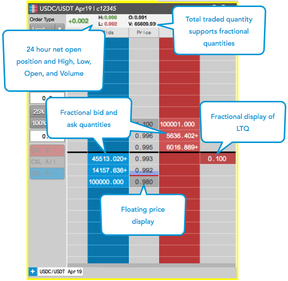
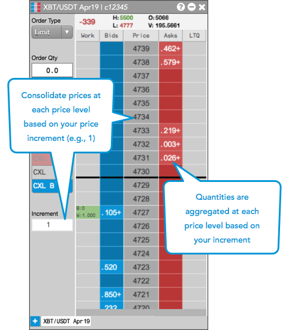
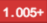
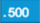
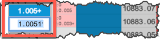
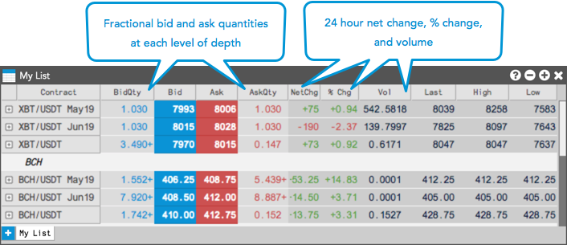
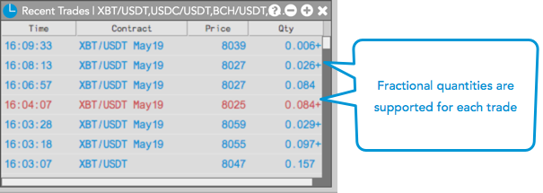
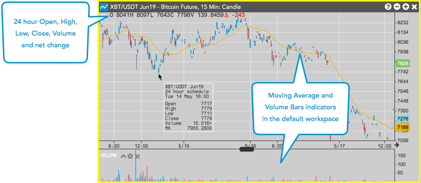

On the CoinFLEX by TT trading platform, you can view market data for CoinFLEX spot and futures instruments in the MD Trader, Market Grid, Time and Sales, and Charts widgets.
When viewing CoinFLEX by TT market data in MD Trader, consider the following:
The following example shows CoinFLEX market data displayed in MD Trader.

Refer to the help library for more information about market data in MD Trader and configuring the MD Trader display.
You can consolidate prices at specific price increments by enabling the Settings | Price increment per row option in MD Trader. When enabled, aggregate order quantities between each price increment are displayed at each price level. For example, a price increment of "1" entered for XBT/USDT results in prices ticking in 1.0 increments.

Quantities can be displayed with 0-4 decimals of precision using the Quantity display decimal places option in the Preferences | General tab. By default, this option is set to "2".
A "+" is shown after the last displayed decimal to indicate additional quantity (e.g.,  ).
If the actual quantity equals your display setting value, or if the remaining decimals are "0", then the decimals are displayed without the "+" (e.g., .The following fields will adhere to the "Quantity display decimal places" setting:
Note: The Order Book, Audit Trail, and Fills widgets will show the full quantity regardless of this setting.
If you click a formatted quantity when "Quantity display decimal places" is enabled, the actual, full quantity will seed in the appropriate widget field. For example, if you click "1.005+"" in the Net Open Position field in the MD Trader order entry panel, then "1.0051" will be seeded in the order quantity field.

When viewing CoinFLEX market data in the Market Grid, consider the following:
The following example shows CoinFLEX market data displayed in the Market Grid:

For each trade, the Time and Sales widget supports showing the fractional traded order quantity up to four decimal places.

For each CoinFLEX instrument, the Charts widget supports showing the 24 hour High, Low, Close, Volume, and Net Change in addition to showing market data at each user-defined time interval.
For CoinFLEX by TT, the default chart opens with the Volume Bars and Moving Average technical indicators applied to the chart. The chart is also linked to MD Trader as indicated by the yellow border. When instruments are changed in the Market Grid or a working order for an instrument is selected in the Order Book, the market data for the instrument appears in the Chart.
